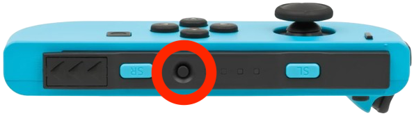

Это краткое руководство по работе с приложением. Оно рассказывает, как
подключить контроллеры Joy-Con, настроить вибрацию для сессии и сохранить
настройки — шаг за шагом, без предположения, что вы знакомы с игровыми
контроллерами.
Подключение Joy-Con
-
Сначала переведите оба Joy-Con в режим сопряжения. Для этого найдите маленькую круглую кнопку Sync сбоку каждого Joy-Con (обведена красным на иллюстрации). Нажмите и удерживайте эту кнопку Sync, пока индикаторы не начнут мигать. Если индикаторы не начинают мигать, вполне вероятно, Joy-Con разряжены и требуется их зарядить.

-
Далее подключите оба Joy-Con по Bluetooth в настройках компьютера —
так же, как подключаются беспроводные наушники.
-
Затем в приложении нажмите «Подключить Joy-Cons».
-
В настольной версии приложения уже разрешённые контроллеры обычно
подключаются автоматически при следующем запуске — повторно нажимать
кнопку не нужно.
Как работает вибрация
Приложение воспроизводит выбранный рисунок вибрации в момент, когда шарик
на экране касается левого или правого края дорожки. Вибрация передаётся в
Joy-Con соответствующей руки: у левого края — в левый контроллер, у
правого — в правый.
Рисунки вибрации и сила
-
«Рисунок вибрации» — это последовательность тактильных импульсов,
которая проигрывается при касании шариком края.
-
Для каждого рисунка вибрации можно настроить свою силу вибрации отдельно. При
повторном выборе рисунка приложение автоматически восстановит ранее
заданную для него силу — настраивать каждый раз заново не придётся.
-
Если рисунок вибрации ещё не настраивали, по умолчанию используется сила
50%.
-
Последний выбранный рисунок вибрации и его сила запоминаются автоматически. При
следующем открытии приложения они будут восстановлены — сессию можно
продолжить с того же места.
-
В приложении доступно 47 рисунков вибрации: простые одиночные импульсы,
ритмические последовательности, динамические рисунки с изменением силы и
тактильные клики в стиле Apple Watch. Ползунок силы изменяет общую
интенсивность рисунка, сохраняя его ритм и характер.
Проверить вибрацию перед сессией
Кнопка «Проверить вибрацию» сразу воспроизводит выбранный рисунок на обоих
Joy-Con — движение шарика для этого не нужно. Если включён звук щелчка, он
тоже прозвучит. Используйте эту кнопку, чтобы оценить силу и характер
вибрации до начала сессии с клиентом.
Избранные рисунки вибрации
Если вы используете одни и те же рисунки чаще других, добавьте их в
избранное — это ускоряет переключение между сессиями.
-
Флажок «Избранный рисунок» относится к рисунку, который выбран прямо
сейчас. Установите флажок, чтобы добавить рисунок в избранное, или
снимите его, чтобы удалить.
-
То же самое можно сделать прямо на Joy-Con: одновременно нажмите верхние
кнопки L + R (на верхних гранях контроллеров) или
нижние курки ZL + ZR.
-
Избранные рисунки отмечены в списке символом ★.
-
Если включить флажок «Только избранное», в списке и при переключении
кнопками «−» / «+» будут доступны только избранные рисунки.
-
Если избранных рисунков ещё нет, флажок «Только избранное» ни на что не
влияет — список остаётся полным.
Рисунки вибрации для случайного режима
-
Флажок «Использовать случайно» добавляет текущий рисунок в отдельный
список, из которого приложение выбирает рисунки в случайном режиме
(см. ниже).
-
То же самое действие выполняет кнопка Capture —
небольшая круглая кнопка на внутренней стороне левого Joy-Con, рядом с
экраном.
-
Рисунки для случайного режима отмечены символом 🎲.
-
Этот список не связан с избранным: один и тот же рисунок может быть
одновременно в обоих списках, только в одном из них, или ни в одном —
это две независимые настройки.
Случайный режим
Случайный режим полезен, если вы хотите, чтобы рисунок вибрации менялся
сам по себе во время сессии, а не оставался фиксированным.
-
Включите флажок «Случайный режим», чтобы приложение могло выбирать
рисунок вибрации при каждом касании края.
-
При каждом касании края приложение с вероятностью 50% оставляет текущий
рисунок вибрации, а с вероятностью 50% выбирает другой рисунок вибрации из списка
«Использовать случайно».
-
Если в списке несколько рисунков вибрации, повторный выбор того же рисунка при
смене исключён: если смена произошла, рисунок точно будет другим.
-
Каждый рисунок вибрации в случайном режиме воспроизводится с силой, сохранённой
именно для него — ползунок силы вибрации в этот момент на него не
влияет.
-
Если список случайных рисунков пуст, будет воспроизводиться текущий
выбранный рисунок вибрации с силой, заданной ползунком.
-
Избранные рисунки и флажок «Только избранное» на случайный режим никак
не влияют — это отдельная настройка.
-
Случайный режим можно включить или выключить флажком в приложении, либо
нажатием правого стика — небольшого рычажка на верхней части правого
Joy-Con, который также можно нажимать как кнопку.
Управление с клавиатуры
Основные команды дублируются обычной клавиатурой компьютера — удобно,
когда Joy-Con не под рукой или быстрее нажать клавишу. Клавиши работают
на любой раскладке, включая русскую.
-
Пробел — Старт / Стоп движения шарика.
-
Стрелки ↑ / → увеличивают скорость движения, стрелки
↓ / ← уменьшают её — как стрелки на левом Joy-Con:
одно нажатие меняет скорость на 0.10, удержание меняет её плавно.
-
Клавиши 1 / 2 / 3 (верхний цифровой ряд и цифровой
блок) — быстро выставить скорость 0.8 / 1.0 / 1.2.
-
Enter — включить или выключить случайный режим.
-
S — включить или выключить звук щелчка.
Звук щелчка
Звук щелчка можно включить как дополнительный ориентир — он подсказывает,
в какую сторону произошло касание шарика, даже без взгляда на экран.
-
Включите флажок «Включить», чтобы вместе с вибрацией воспроизводился
короткий звук щелчка.
-
Выберите нужный вариант щелчка в выпадающем списке.
-
При касании левого края звук воспроизводится в левом ухе, при
касании правого — в правом. Это сохраняет соответствие между движением
шарика, звуком и вибрацией.
-
Звук запускается с небольшим опережением, чтобы сам щелчок прозвучал
точно в момент касания шариком края.
-
Включение звука при остановленном шарике, выбор другого варианта звука
и кнопка «Проверить вибрацию» воспроизводят проверочный щелчок по
центру — сразу в обоих динамиках.
-
Если движение шарика уже запущено, включение флажка не воспроизводит
тестовый звук сразу — щелчок прозвучит при следующем касании края.
Сохранение настроек
Все настройки сохраняются на устройстве автоматически: выбранный рисунок,
сила для каждого рисунка, избранное, список для случайного режима,
настройки звука и включённые флажки. Специально нажимать «сохранить»
после каждой сессии не нужно.
Кнопка «Настройки» открывает окно с командами «Сохранить настройки» и
«Загрузить настройки» — они нужны, если вы хотите сделать резервную копию
или перенести свои настройки на другой компьютер.
-
«Сохранить настройки» создаёт файл
joyconaz-settings.json. В настольной версии появится окно
выбора места сохранения; в браузере файл будет скачан.
-
«Загрузить настройки» позволяет выбрать ранее сохранённый файл.
Текущие настройки будут заменены настройками из файла, после чего
приложение перезагрузится.
Рекомендуем хранить этот файл в надёжном месте — например, если вы
работаете на нескольких компьютерах или переустанавливаете систему.